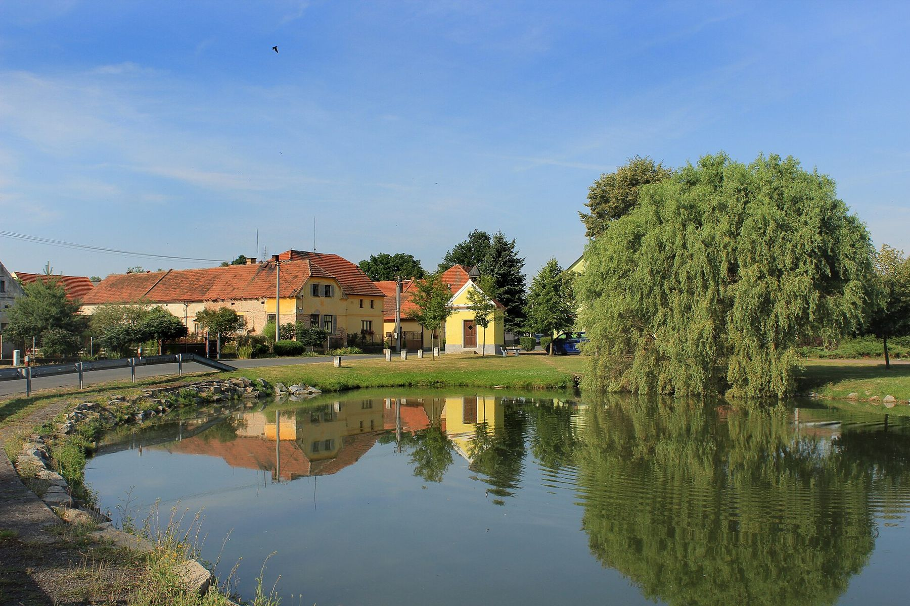
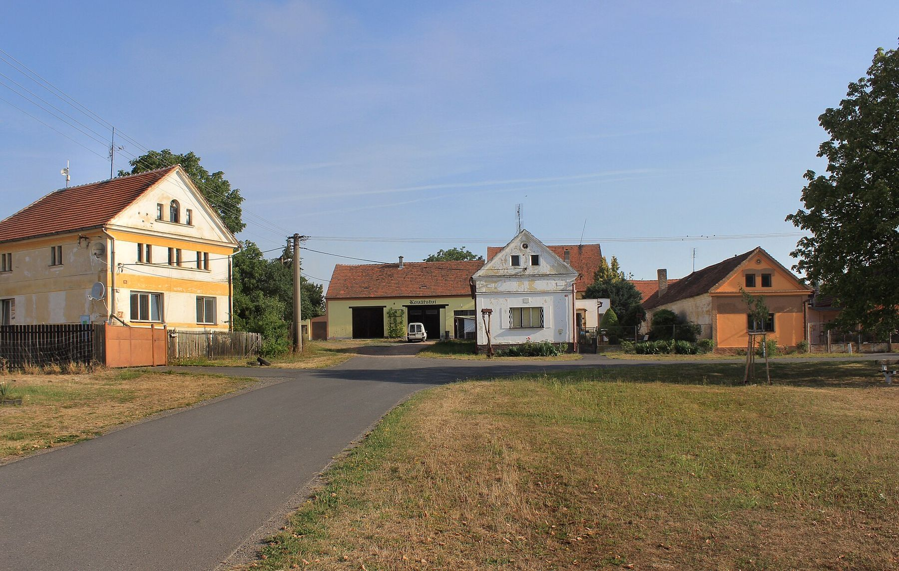
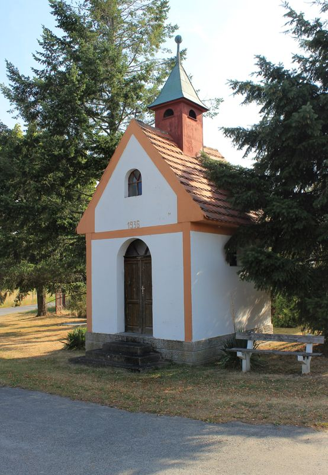
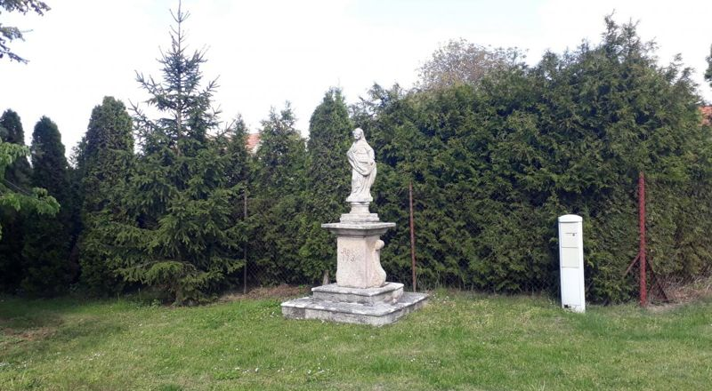
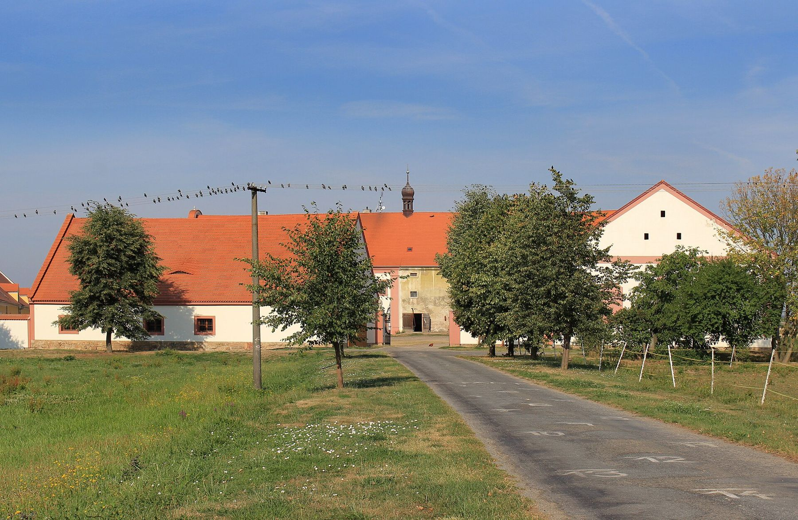

Obec a její historie
Kotovice, Nový a Záluží – tři vesnice, které spojuje společná historie od roku 1272 i společný obecní úřad.
O obci
Obec Kotovice leží na západním okraji Plzeňské kotliny, 17 km jihozápadně od Plzně a 4 km severozápadně od Stoda, v nadmořské výšce zhruba 365–385 m n. m. Do správního území o rozloze 977 ha patří ještě vesnice Nový a Záluží. Žije zde celkem 270 obyvatel.
Do roku 1990 patřily všechny tři obce pod správu MNV ve Stodě, od roku 1991 se osamostatnily a spravuje je Obecní úřad Kotovice. O správě rozhoduje sedmičlenné zastupitelstvo včetně starosty a místostarosty.
Kotovice
První zmínka o obci pochází již z roku 1272, a to v souvislosti s chotěšovským klášterem, k němuž tehdy patřila. Jako obec raně feudální má typickou náves, v historickém jádru se dochovalo několik památkově významných budov, většinou hospodářských usedlostí z let 1850–1930.

Co v Kotovicích najdete
- Čtyřbokou kapli se střešní zvoničkou z roku 1895.
- Usedlost č. p. 10 s dochovanou fasádou svědčící o výstavnosti zdejších dvorů – stále chráněná památkovou péčí.
- Původní německou školu v areálu dnešního dětského hřiště, dnes pro volnočasové aktivity místní mládeže.
- Bývalou českou menšinovou školu postavenou po roce 1918 pro děti českých obyvatel zdejších vsí; roku 2000 upravenou na 4 byty.


Nový
Obec je novověkého založení, vznikla po zrušení někdejšího klášterního dvora v roce 1828. Na malé, pravidelné návsi je po obvodu unikátně dochovaná historizující zástavba – hospodářské usedlosti ji lemují ze tří stran. Plánovitě zde byly vystavěny nevelké usedlosti lidové architektury, takže v roce 1938 zde stálo již 20 domů.

- Zděná čtyřboká kaple z roku 1937 v centru návsi, s pětibokým závěrem a věží nad předsíní; fasádu člení lesénový řád.
- Usedlosti č. p. 6 a 7 s takzvaným polopatrem a branami s vodorovným překladem.
- Litinový křížek na žulovém podstavci z 19. století proti domům č. p. 3 a 4, v jeho nice drobná plastika Piety.
- Kulturní dům s pohostinstvím – v sálku se konají maškarní bály, mikulášské besídky, taneční zábavy i poslední leče.
- Hřiště pro míčové sporty na návsi a obecní rybník Kravský za vsí směrem na Chotěšov.
Záluží
I tato obec je raně feudálního původu, v roce 1272 patřila také k chotěšovskému klášteru. Žije zde přibližně stejný počet obyvatel jako v Novém – okolo padesáti.


- Památná lípa velkolistá před domem č. p. 35 u dvora Gigant – stará přibližně 360 let, téměř 34 m vysoká, s obvodem kmene kolem 7 metrů. Mnohokrát ji zasáhl blesk, naposledy v srpnu 2001.
- Malá zděná kaplička a vedle ní socha Panny Marie – Immaculata z roku 1737 na hranolovém soklu.
- Hasičská zbrojnice se čtyřbokou věží.
- Vodní plocha vzniklá zatopením pískového lomu na jižní straně vsi – chov ryb a rekreace.
- Zahrada s rekordní jabloní – na zhruba sedmdesátileté jabloni tu dozrálo jablko o váze 697 gramů, zapsané v České databance rekordů. Více o jablku
Barokní dvůr Gigant

Dominantou Kotovicka je klášterní barokní dvůr Gigant v Záluží. Se stavbou dvora do dnešní podoby se začalo asi v polovině 17. století a dokončen byl roku 1711. U dvora stojí památná lípa stará více než 350 let s obvodem kmene 691 cm.
Asi 500 m za dvorem jihozápadním směrem leží Dvorský rybník o rozloze 4 ha, revitalizovaný v letech 2000–2002. Dvůr Gigant prochází rekonstrukcí a připravuje se pro rekreaci a další komerční využití.
Současnost
Na návsi v Kotovicích sídlí obecní úřad, kde je jednou týdně otevřena místní knihovna s bezplatným internetem. Je zde i prodejna sloužící obyvatelům všech okolních vesnic. Děti i dospělí mohou využívat dětské víceúčelové hřiště postavené s podporou Programu obnovy venkova Plzeňského kraje. Ve všech třech vesnicích byly opraveny kapličky a obnovena veřejná zeleň.
Život v obci